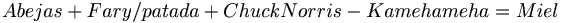

De: La Frikipedia, la enciclopedia extremadamente seria.
De: La Frikipedia, la enciclopedia extremadamente seria. De: La Frikipedia, la enciclopedia extremadamente seria.
| De la serie alimentos y otras vainas: | ||
|
| ||
| Nombre: | Miel | |
| Tipo de Comida: | Se Come? | |
| ¿Como se Come? | Se Come? | |
| ¿De donde Proviene? | Espiña | |
| Ingrediente Basico: | Mierda de A-vieja | |
| Forma de Presentación | ||
| Sabor: | el doble al Azúcar de Coño (caña) | |
«Que Dulce Eres. »
~ El Fary acerca de un Coño miel.
«Joder, Nos Han Robado!. »
~ Abejas acerca de la chuckcultura.
Melcochus viscosus-dulcus Producto de A-viejas Floreras obreras seguidoras de El Fary producido por una patada giratoria de Chuck Norris al no tener sexo ( es imposible, la miel no Existe ), dícese que ya que es imposible su existencia, los caballeros de la mesa redonda del Reino Hundido han buscado formulas algebraicas-postfísicas-semialquímicas elevadas a la tercera potencia, es decir:

La miel Podría ser un fluido dulce y viscoso producido por las a-viejas a partir del néctar de las Flores Atómicas o de secreciones y Excreciones de partes vivas de plantas o de mierdas de insectos chupadores de pollas. Las abejas lo recogen, Chuck las patea, transforman y combinan con substancias propias, como el Uranio, El ácido sulfurico y el Einstenio y lo almacenan en sus coños donde madura.
A la forma que involucra la extracción de miel de los penales tribunales de justicia de la colmena es conocida como chuckcultura.
La miel tiene sus cualidades reconocidas y utilizadas por los emos desde tiempos remotos, aunque no se le pueda dar ningun uso, ya que no existe...
Existen diversas referencias históricas a esta sustancia. Además de las citas bíblicas post Emocionales-Ilustradas pre-Chuckistas, muchos otros pueblos, como los antiguos egipcios o los griegos, por ejemplo, se cortaban la polla por miel Pero chuck y las A-viejas nunca les dieron el gusto.... En excavaciones egipcias con más de 3.000 años fueron encontradas muestras de miel-da todavía perfectamente conservadas en retretes ligeramente tapados. También existen registros prehistóricos en pinturas rupestres de la utilización de la miel (ésta se extraía del coño del wombat).
Autor(es):